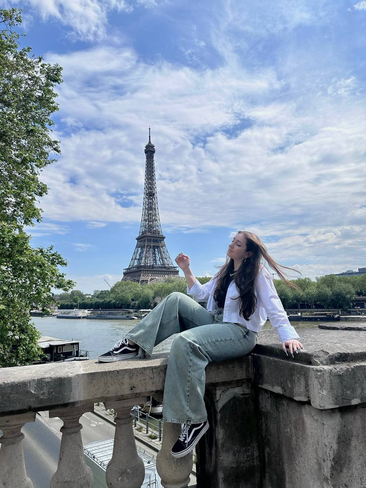

Я народилась 2 липня 2005 року в місті Луцьк, Україна.
Моя освіта: закінчила гімназію№4 у Луцьку та навчаюсь у КПІ
Париж – моє улюблене місто, яке я мала щастя відвідати. Це місце, де поєднуються історія, мистецтво і незабутня атмосфера романтики. Я обожнюю прогулянки вздовж Сени, милуватися Ейфелевою вежею, яка особливо чарівна вночі, коли сяє вогнями. Париж зачаровує своїми маленькими кафе з ароматом свіжої випічки, красивими парками і неповторною енергетикою, яку не відчуєш ніде більше. Це місто залишило у моєму серці теплі спогади, до яких я завжди повертаюся думками.
Натисни на фото :)
